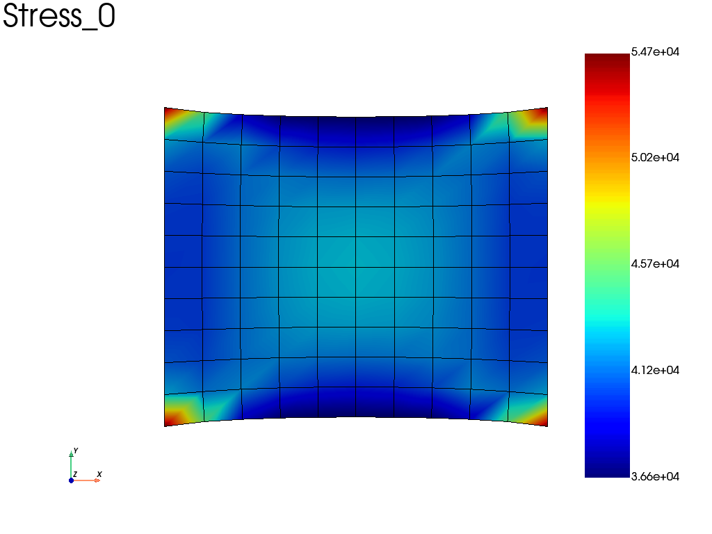
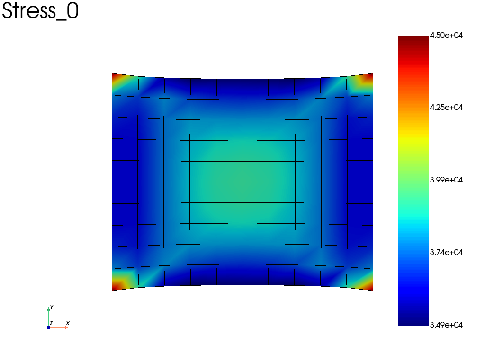
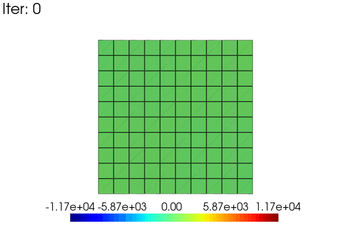
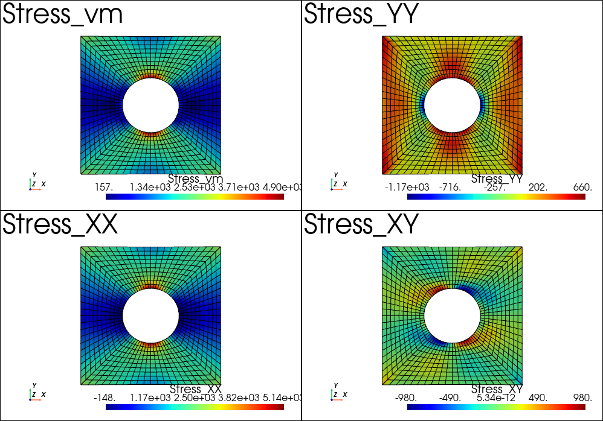

Post-Processing
Get results from a problem
In fedoo, most of the standard results are easily exportable using the
fedoo.Problem.get_results() method of the problem class.
The get_results method returns a fedoo.DataSet object which comes
with several methods for plotting, saving and loading mesh-dependent results.
A dataset can be associated with either a fedoo.Mesh or a
fedoo.MultiMesh.
To avoid a redundent call of the get_results function, especially for time
dependent problems, one can simply add some required output with the
fedoo.Problem.add_output() method. This create a
MultiFrameDataSet object associated to the problem.
Once the required outputs are defined for a given problem, a call to the
fedoo.Problem.save_results() method allow to save all the defined
fields on disk using the choosen file format, and associate the saved file to
an iteration of the MultiFrameDataSet. For non linear problems
solved using fedoo.Problem.nlsolve(), results are automatically saved at
some iterations dependending on the choosen parameters.
The MultiFrameDataSet stores references to the saved iterations in
the MultiFrameDataSet.list_data attribute. The method
MultiFrameDataSet.load() is called to read the data
of a given iteration.
Class DataSet
|
Object to store, save, load and plot data associated to a mesh. |
Class MultiFrameDataSet
|
MultiMesh results
A DataSet or MultiFrameDataSet associated with a
MultiMesh can contain submeshes with different element types.
Node fields use the common global node numbering. Element and Gauss-point
fields returned by DataSet.get_data() are stored in a
MultiMeshData object, with one data block per submesh.
Global element ids use the concatenated submesh order: all elements of submesh 0, then all elements of submesh 1, and so on. For example:
stress = results.get_data("Stress", "vm", "Element")
# Access data by submesh or by global element id
shell_stress = stress.submesh("tri3")
value = stress.global_element_value(42)
values = stress.global_element_values([3, 18, 42])
# Build one NumPy array using the global element order
global_stress = stress.to_global()
Normal NumPy-style access to a MultiMeshData object refers to its
active submesh. Use MultiMeshData.to_global() when a globally ordered
array is required. A global selection spanning several submeshes can be
plotted directly:
results.plot(
"Stress",
component="vm",
data_type="Element",
element_set=[3, 18, 42],
global_element_set=True,
)
|
Array-like data container associated with a |
Save data to disk
Once a DataSet is created using for instance the
fedoo.Problem.get_results() method, the data can easily be saved on
disk using for instance the fedoo.DataSet.save() method.
FDH5 is the default and recommended format. If DataSet.save,
MultiFrameDataSet.save_all, or read_data is called with a filename
without an extension, the .fdh5 extension is assumed.
- The available file types are:
‘fdh5’: The native HDF5-based Fedoo format. It stores the mesh, node and element sets, node/element/Gauss-point fields, and multiple iterations in one file. It also preserves the complete MultiMesh structure and its per-submesh fields. This is the default format.
‘fdz’: A legacy zipped archive containing the mesh using the ‘vtk’ format named ‘_mesh_.vtk’, and data from several iterations named ‘iter_x.npz’ where x is the iteration number (x=0 for the 1st iteration).
‘vtk’: The vtk format contains the mesh and the data in a single files. The gauss points data are not included in the file. This format is efficient for a linear problem when we need only one time iteration. In case of multiple saved iterations, a directory is created and one vtk file is saved per iteration. The mesh is included in every file which is not memory efficient.
‘msh’: Format associated to gmsh. Have the same drawback as the vtk format for time depend results and missing gauss points data. The vtk format should be prefered.
‘npz’: Save data in a numpy file npz which doesn’t include the mesh. The mesh is generally saved beside in a raw vtk files without results.
‘npz_compressed’: Same as npz with a compression of the zip archive.
‘csv’: Save DataSet that contains only one type of data (ie Node, Element or Gauss point data) in a csv file (needs the library pandas installed). The mesh is not included and may be saved beside in a vtk file.
‘xlsx’: Same as csv but with the excel format.
Read data from disk
To read data saved on disk, use the function read_data().
The data are imported as DataSet or
MultiFrameDataSet objects depending on the imported file(s).
FDH5 is used by default when the filename has no extension.
Example
For example, defining and solving a very simple problem :
import fedoo as fd
fd.ModelingSpace("2Dstress")
mesh = fd.mesh.rectangle_mesh()
material = fd.constitutivelaw.ElasticIsotrop(2e5, 0.3)
wf = fd.weakform.StressEquilibrium(material)
assembly = fd.Assembly.create(wf, mesh)
# Define a new static problem
pb = fd.problem.Linear(assembly)
# Boundary conditions
pb.bc.add('Dirichlet', 'left', 'Disp', 0 )
pb.bc.add('Dirichlet', 'right', 'Disp', [0.2,0] )
# Solve problem
pb.solve()
Then, we can catch the Stress, Displacement and Strain fields using:
results = pb.get_results(assembly, ["Stress", "Disp", "Strain"])
# plot the sigma_xx averaged at nodes
results.plot("Stress", component='XX', data_type='Node')

Alternatively, if we take the same problem, but accounting for geometric non linearities (nlgeom = True), we can automatically save results at specified time interval (here the results are saved on a file).
wf.nlgeom = True
pb_nl = fd.problem.NonLinear(assembly)
# Boundary conditions
pb_nl.bc = pb.bc
results_nl = pb_nl.add_output('nl_results', assembly, ["Stress", "Disp", "Strain"])
pb_nl.nlsolve(dt = 0.1, tmax = 1, interval_output = 0.2)
# plot the sigma_xx averaged at nodes at the last increment
results_nl.plot("Stress", component='XX', data_type='Node')

Fedoo interactive viewer
Fedoo includes a graphical application to visulize a result file or a DataSet like object. To be able to launch the viewer, the package pyvistaqt has to be installed.
Then the viewer can either be launched as a standalone application from command line:
$ python -m fedoo.viewer
or from a python code. The code below show different ways to start the viewer inside a python code:
import fedoo as fd
result = fd.read_data('myfile.fdh5') # load a DataSet from file
fd.viewer() # start the viewer with no file opened
fd.viewer(result) # start the viewer and open the result DataSet
fd.viewer('myfile.fdh5') # start the viewer with the data from a file
The viewer includes the following tools and features:
Management of multiple independent windows, which can be linked together.
Field and iteration selectors for data exploration.
A wide range of plotting options.
Show or hide elements from predefined sets, rectangular selections, or arbitrary expressions.
Plot results along an interactively defined line.
Plot time-history data, when applicable.
Clip the current mesh using an interactively defined plane.
Save figures and create movies using the current visualization settings.
Basic operations
The principale methods/functions to extract, plot and manage result data are listed in this section.
Extract data
|
Retrieve data from the DataSet for a given field. |
|
Retrieve history data from the MultiFrameDataSet. |
Plotting results
A few convenient methods are proposed to generate images or movies from
DataSet and MultiFrameDataSet objects.
|
Plot a field on the surface of the associated mesh. |
|
Plot a field on the surface of the associated mesh. |
|
Plot history data from the MultiFrameDataSet. |
|
Create a video from the data. |
Save results
|
Save data to a file. |
|
Write a npz file using the numpy savez function. |
|
Write a compressed npz file using the numpy savez_compressed function. |
|
Save the mesh using a vtk file. |
|
Write data in a csv file. |
|
Write data in a xlsx file (excel format). |
|
Write vtk file with the mesh and associated data. |
|
Write a msh (gmsh format) file with mesh and associated data. |
|
Write the dataset to a FDH5 file. |
|
Save all data from MultiFrameDataSet. |
Read results
|
Read a file from disk. |
|
Read a file from disk. |
|
Load data from a data object. |
|
Load data from a data object. |
Advanced operations
Write Movies
A very simple way to write a movie from a MultiFrameDataSet is
to call the embedded method MultiFrameDataSet.write_movie().
Though this method comes with lots of options, one may sometimes want to fully control the movie rendering. This is easy to do by manualy writing the movie using the pyvista library.
Here is an exemple to animate the linear results obtained in the problem defined above. The idea is to use a scale_factor applied to the displacement (using the scale argument) and to the stress field (modifiying the results data).
import pyvista as pv
results = pb.get_results(assembly, ['Stress', 'Disp'], 'Node')
stress = results.node_data['Stress']
clim = [stress[3].min(), stress[3].max()] # 3 -> xy in voigt notation
pl = pv.Plotter(window_size = [600,400])
pl.open_gif("my_movie.gif", fps=20)
sargs = dict(height=0.10, position_x=0.2, position_y=0.05)
for i in range(48):
scale_factor = (i + 1) / 48
results.node_data["Stress"] = scale_factor * stress
results.plot(
"Stress",
"XY",
plotter=pl,
scale=scale_factor,
clim=clim,
title=f"Iter: {i}",
title_size = 10,
scalar_bar_args=sargs,
)
pl.hide_axes()
pl.write_frame()
pl.close()

Multiplot feature
It is possible to create the plotter before calling the plot function. This allow for instance to use the pyvista multiplot capability. For instance, we can plot the stress results after the example Plate with hole in tension:
import pyvista as pv
pl = pv.Plotter(shape=(2,2))
# or using the backgroundplotter:
# from pyvistaqt import BackgroundPlotter
# pl = BackgroundPlotter(shape = (2,2))
results.plot('Stress', 'vm', 'Node', plotter=pl)
pl.subplot(1,0)
results.plot('Stress', 'XX', 'Node', plotter=pl)
pl.subplot(0,1)
results.plot('Stress', 'YY', 'Node', plotter=pl)
pl.subplot(1,1)
results.plot('Stress', 'XY', 'Node', plotter=pl)
pl.show()
